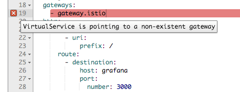

I’ve been following the news about istio since it’s first alpha release in 2017. I think this project has a great future, because it solves a lot of pain points in the microservice based architecture, like auth, observability, fault-injection, etc.
But the fact is, I never actually tried it. Prior to v1.0 there were too many bugs and limitations to put it into production. So, when they finally released “production-ready” version I got quite exciting. It still took me a few months to find free time, but I finally gave it a try.
I decided to start my experimentations with Istio not from the usual bookstore example, but by making it the main ingress controller, responsible for all the traffic, incoming to my cluster. Previously, I used ingress-nginx, more precisely I had 2 ingress-controllers: one exposed to the Internet and one for internal-only services. This post is about replacing both of them with Istio.
Install
This post is referencing Istio version 1.1.0-rc.0, unless explicitly stated otherwise
It is extremely easy and straight forward to install istio using helm chart, at least if you’re not trying to understand what all of the configuration options mean. I started by copying the default values.yaml file and enabling all the components (ingress, grafana, servicegraph, tracing, kiali, istiocoredns, istio_cni).
# add istio helm repo
$ helm repo add istio.io https://storage.googleapis.com/istio-release/releases/1.1.0-rc.0/charts
# sync your index
$ helm repo update
# I usually save default values.yaml file to the values-custom.yaml to add to the repo
$ helm upgrade --install -f istio/values-custom.yaml istio istio.io/istio --namespace istio-system
Assuming there were no problems during the installation, you now have a new namespace filled with containers.
Services with the type LoadBalancer got their External IPs from the metallb load balancer set up in the cluster.
some of the questions one may have at this point are:
What’s the difference between istio-ingress and istio-ingressgateway, which one should you set in your DNS?
How to access default istio services e.g kiali, grafana, prometheus?
How to expose something to the outside world?
Ingressing traffic: istio-ingress and istio-ingressgateway
The Ingress controller is, basically, a reverse-proxy that runs in a cluster and configures routing rules according to Ingress resources.
Istio provides two ways of ingressing traffic into your cluster.
First one, istio-ingress, is a traditional ingress controller like nginx-ingress, traefik or controur.
This controller runs in your cluster and listens to all the changes to Ingress resources from the Kubernetes API and sends incoming traffic according to these rules.
You can easily swap one ingress controller to another by just changing the annotation on your ingress objects:
Istio documentation discourages use of this method as a “legacy way” and suggests using the second one.
The second one, istio-ingressgateway, is also an ingress controller, but unlike traditional ones, it does not rely on native Kubernetes Ingress objects. It uses its own custom resources: Gateway, VirtualService, DestinationRule, etc.
Using custom resources provides more flexibility in configuring network policies, but also makes you write a few more YAMLs for each service.
In this post, I’m going to use the second one.
Exposing services using Istio-ingressgateway
To expose a service using ingressgateway you have to create at least 2 objects - Gateway and a VirtualService.
As an example, let’s expose the internal istio services.
Assuming that we have domain example.com we need to create a following gateway:
Here we create a rule for the ingressgateway with the selector istio: ingressgateway to accept HTTP traffic on port 80 if SNI host matches the host in the list.
Few things to keep in mind:
the selector is used by istio to select the ingressgateway. Keep this in mind if you have multiple ingressgateways
Better to avoid using *.domain in hosts, unless you have only a single gateway.
port naming is important, it is used in some routing logic inside the istio.
The port names must be of the form protocol-suffix with grpc, http, http2, https, mongo, redis, tcp, tls or udp as the protocol in order to take advantage of Istio’s routing features.
For example, name: http2-foo or name: http are valid port names, but name: http2foo is not. If the port name does not begin with a recognized prefix or if the port is unnamed, traffic on the port will be treated as plain TCP traffic (unless the port explicitly uses Protocol: UDP to signify a UDP port).
Next, we need to create a VirtualService for each of the services we want to expose.
Here is a one for the Grafana:
If VirtualService and Gateway are located in the different namespaces, make sure to set gateway in the format of gateway-name.namespace, otherwise, you’ll be getting 404.
Istio and HTTPS
Exposing services to the world is cool, basics are working. But in 2019 everything should be exposed using HTTPS.
With Istio exposing site using HTTPS is in fact much more complicated and limited comparably with other ingresses.
Let’s start with exposing our service using HTTPS and then I’ll list all the issues and limitations I faced with possible workarounds.
To update our gateway to listen to HTTPS traffic we need to have a valid certificate. I’m a big fan of LetsEncrypt and cert-manager, so I’m going to use it here.
You can install cert-manager as part of istio chart or you can use a dedicated chart for that. I already have cert-manager installed, so I will just add another certificate to the cluster.
If everything went well, we can now access Grafana using HTTPS with a valid certificate from the LetsEncrypt.
Issues
Now, let’s talk about the issues I have encountered during that short period of time I spent working with istio.
[FIXED in 1.1] Manual update of the certificates. This is probably the most annoying thing. Having to update the deployment for each certificate, and restart ingressgateway to pick up it is not cool. This was finally fixed in 1.1 release. It is now possible to tell istio to use Kubernetes secret. Detailed how-to is here.
[FIXED in 1.1] Another issue popped up when I tried to use the same port 443 for both PASSTHROUGH mode and SSL-termination, which is a perfectly reasonable scenario.
[FIXED in Kiali v0.16.2] I spent some time trying to figure out the correct way of specifying Gateway in the VirtualService. At some point, I thought that you can’t have Gateway and VirtualService in different namespaces. What made it even more confusing is Kiali. Whenever I tried to point VirtualService to the gateway in the different namespace I saw a validation error “virtualservice is pointing to non-existing gateway”

This issue is fixed in the Kiali v0.16.2, which is not yet updated in istio chart.
Conclusion
Istio is still a very young project. Reaching the 1.0 version was a huge step, but it still requires a lot of work. I only touched the ingress part of it and found that it lacks some of the basic functionality that one would expect from the Ingress controller.
On the other hand, it is in a very active development phase. All the issues that I had in 1.0.* version was addressed and fixed in 1.1.0 release.
Another nice piece of software that comes with the Istio is Kiali, it looks really great and it should be very useful when I start using istio as a service mesh, not just an ingress.
Like this post? Want more? Subscribe to get updates delivered straight to your inbox.

Share this post
Twitter
Google+
Facebook
Reddit
LinkedIn
StumbleUpon
Email